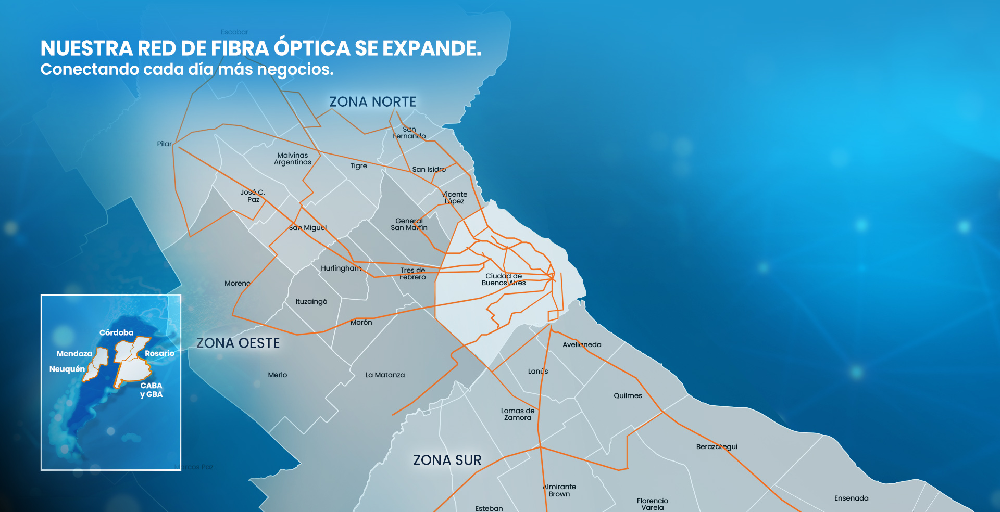

- 1. ArSat
- 2. CABASE
- 3. Cirion
- 4. Claro
- 5. DXC(EDS/HPE)
- 6. EdgeConnex
- 7. Gigared
- 8. IFX Networks/UFINet
- 9. Iplan
- 10. Kyndryl(IBM)
- 11. Nabiax / Actis
- 12. Sencinet (BT)
- 13. Silica (Datco)
- 14. Sky Online
- 15. Telecom (Belgrano)
- 16. Telecom (Coghlan)
- 17. Telecom (Cubecorp)
- 18. Telecom (Hornos)
- 19. Telefónica (Cuyo)
- 20. Telxius (Telefónica)